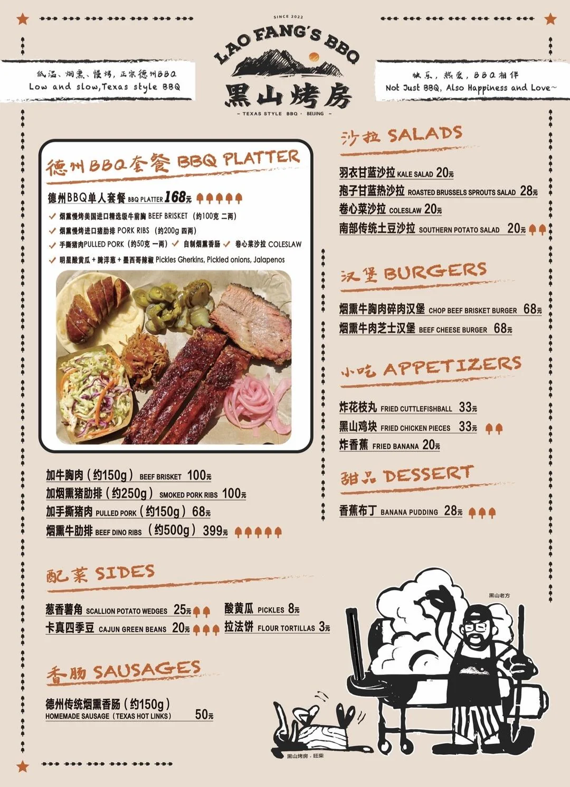
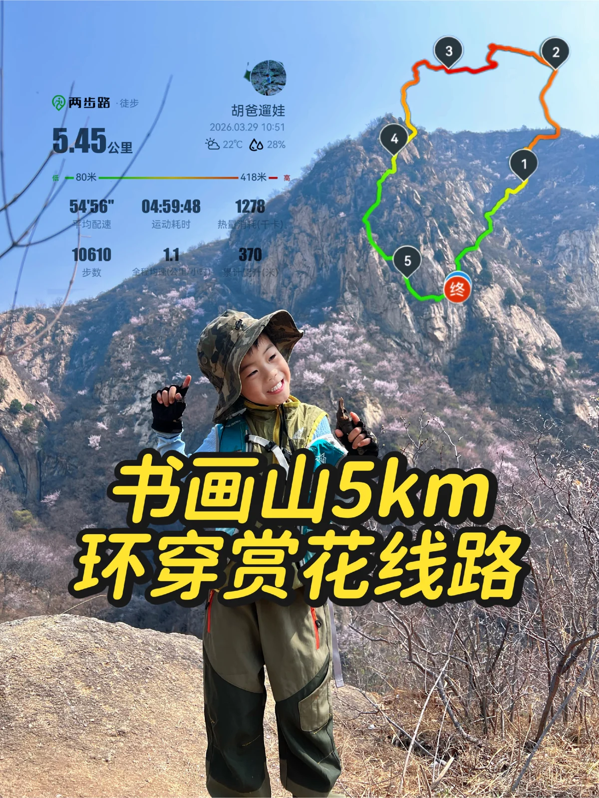
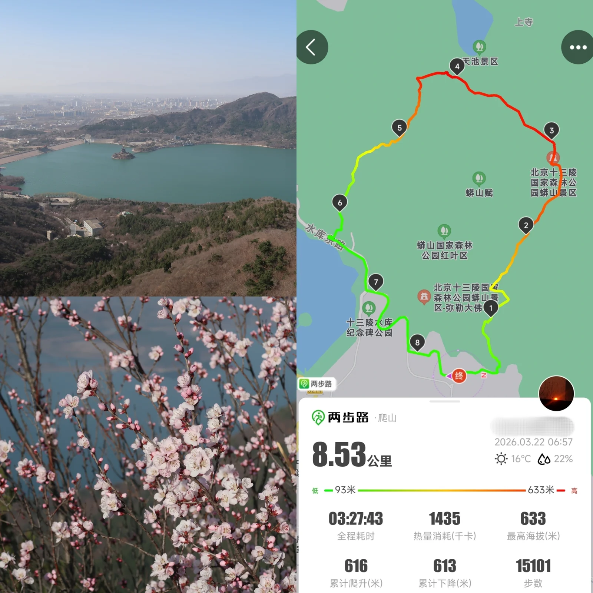
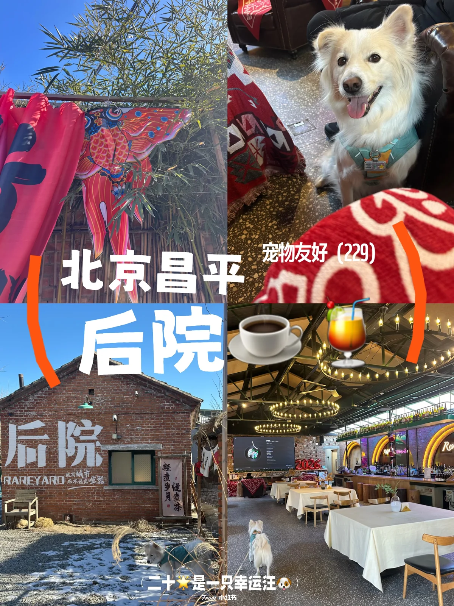
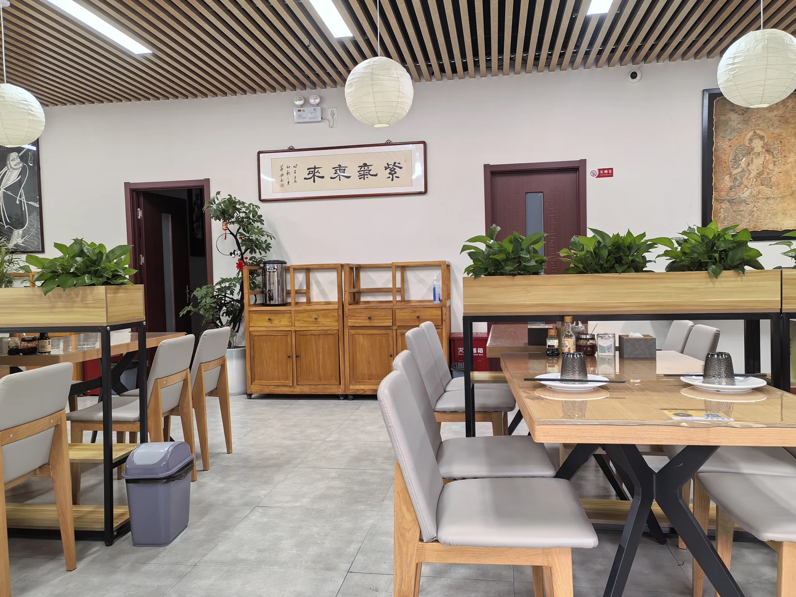

北京周末出行 · vibe trip
五道口出发 · 自驾周末线 · 小红书找氛围 / 六只脚核定量 / 点评 & 携程 & Bing 交叉验证 · 最终落地为可执行行程。
春季周末
徒步 + 休闲
图片版
五道口出发

昌平6.5h57km6.9km / 425m
昌平大黑山环线 + 黑山烤房 / 山脚咖啡
大黑山（景）★ 4.3
黑山烤房BBQ★ 4.6
延寿咖啡★ 4.4

怀柔6.0h47km5.7km / 310m
怀柔书画山小环线 + 桃花 / 追火车
书画山风景区★ 3.6
山前wangwangland（咖啡）★ —

门头沟8.0h37km11.4km / 688m
潭柘寺天坑小环线 + 洞力场 / 阳光房咖啡
潭柘寺景区★ 4.9
gaga★ 4.6
墨托★ 4.2

昌平5.0h44km5.5km / 137m
蟒山 + 十三陵水库观景
蟒山国家森林公园★ 4.9
餐饮：按当天状态就地挑。

昌平6.5h39km7.4km / 412m
白虎涧 + 后院咖啡
白虎涧（后花园店）★ 3.9
后院·咖啡（溜石港店）★ 4.8

海淀7.0h29km7.1km / 684m
凤凰岭 + 素虎 / 山脚恢复
北京凤凰岭★ 4.9
山居岁月（凤凰岭店）★ 4.8
素虎素食（前门店）★ 4.5
图片按原图比例动态排布（CSS columns masonry），紧凑无留白；详细行程、招牌菜、菜单入口、正负评价进入各路线页继续看。